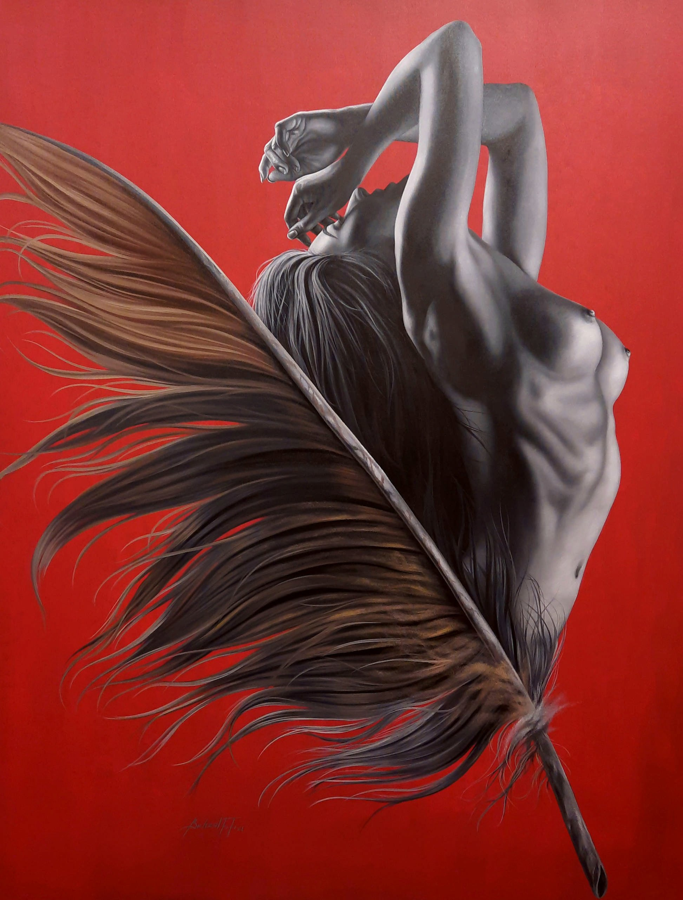
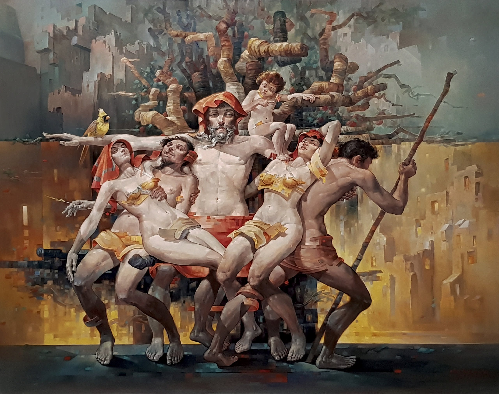
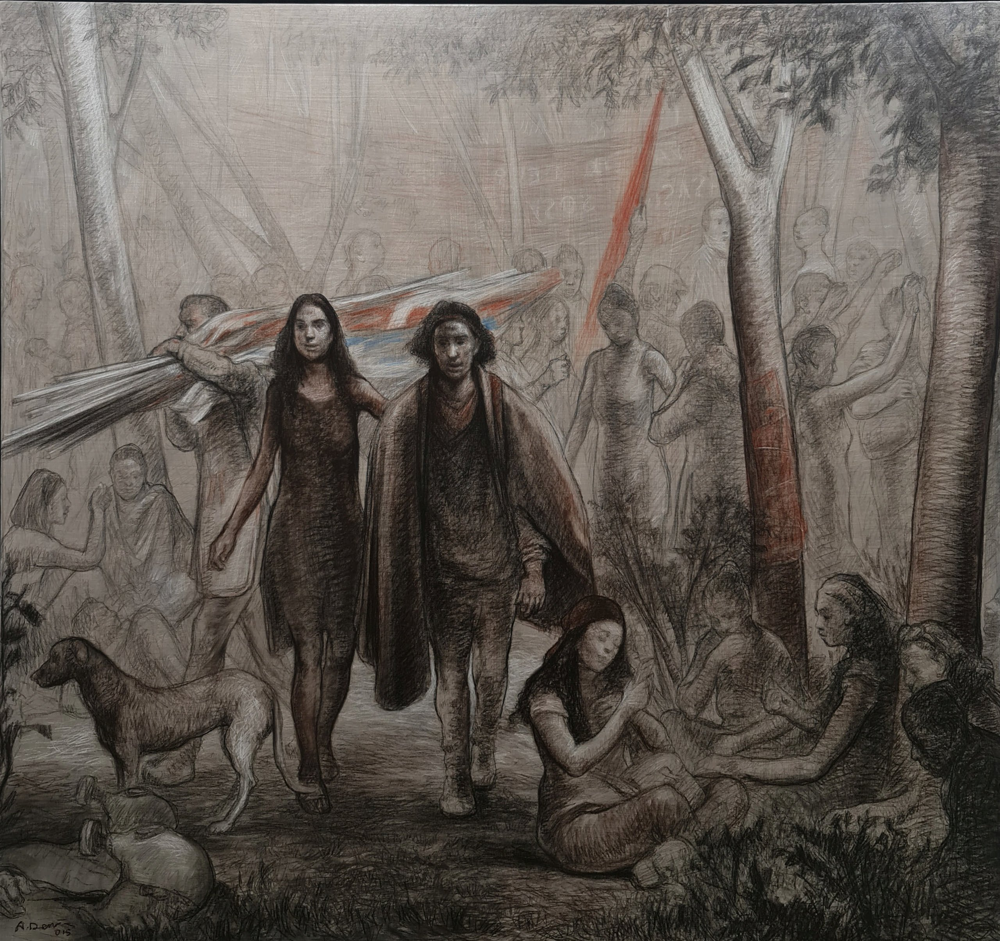
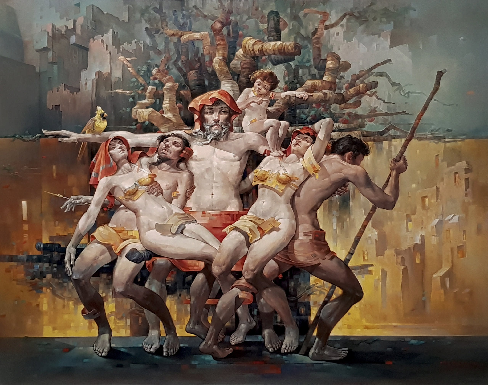
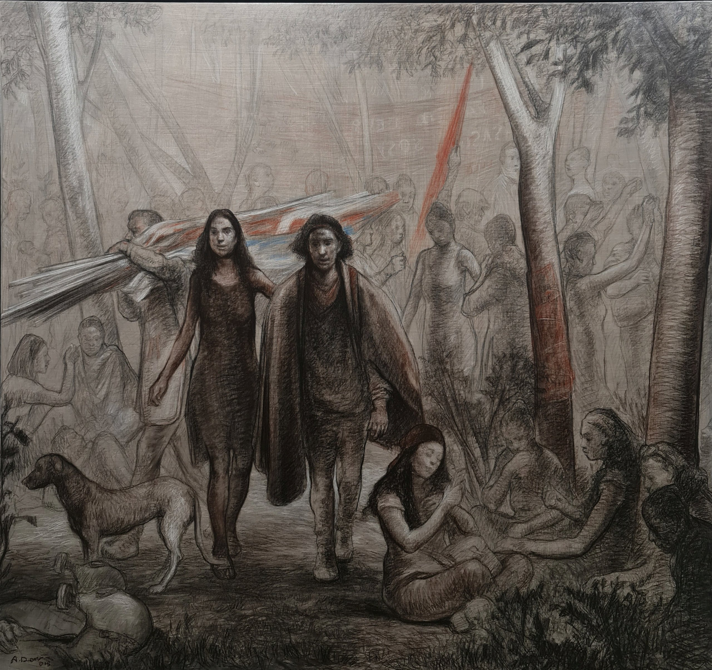

GALERİ SOYUT / ÇAYYOLU
« Yeni Etki / New Impact »
Resim, Heykel ve Seramik Sergisi - Painting, Sculpture and Ceramic Exhibition
Galeri Soyut, Çayyolu şubesinin açılışını “Yeni Etki” sergisi ile yapıyor. 80 Sanatçıya ait 170 eser 4 Aralık 2021 – 31 Ocak 2022 tarihleri arasında sanatseverler ile buluşuyor.
Gallery Soyut opens its Çayyolu branch with the “New Impact” exhibition. 170 works by 80 artists meet with art lovers between 4 December 2021 – 31 January 2022.
Resim:
Adem BAŞPINAR,Ahmet Umur DENİZ,Ahmet YEŞİL,Ali Fatih KÜÇÜKOSMANOĞLU, Ali HERİSCHİ, Ayhan ÇETİN, Baran KAMİLOĞLU, Behzat Hasan FEYZULLAH, Binnur YÜCEBAŞ, Celal BİNZET, Derya YILDIZ, Duygu AYDOĞAN, Emrah EMİR, Engin KORKMAZ, Ercan AYÇİÇEK, Ertuğrul ATEŞ, Erol PELİOĞLU, Fevzi KARAKOÇ, Firdevsi FEYZULLAH, Gülveli KAYA, Habip AYDOĞDU, Hakan CİNGÖZ, Hakan ERASLAN, Halil COŞKUN, Hasan Basri İNAN, Hasan MİRZA, Hasan SAYGIN, Hatice ARAS, Hayati MİSMAN, Hikmet ÇETİNKAYA, Hülya Kandemir KANBER, Hüseyin FEYZULLAH, Ilgın ERDEM, Kadir ABLAK, Kadir ÖZTOPRAK, Kadir ŞİŞGİNOĞLU, Mehmet Ali DOĞAN, Murat TOLGA ,Müslüm TEKE, Necmettin ÖZLÜ, Nurettin AKKAYA, Orçun İLTER, Orhan UMUT, Osman AKÇA, Peruze HAMURCU, Raşit ALTUN, Samed Arda SELİM, Selahattin AYDIN, Sema ÖCAL, Sertap YEĞİN, Talat AYHAN, Tamer DERİCAN, Tansel TÜRKDOĞAN, Tolga BOZTOPRAK, Zahit BÜYÜKİŞLEYEN, Adnan TURANİ, Mustafa AYAZ, Ergin İNAN, Devrim ERBİL, Yalçın GÖKÇEBAĞ, Nuri ABAÇ, Nuri İYEM
Heykel – Seramik – Cam
Asaf ERDEMLİ, Ayşe ERGÜNER, Azimet KARAMAN, Buğra Özer, Cemil GÜÇ, Demet KAYA, Elif AYDOĞDU AĞATEKİN, Emir ÖZKAYA, Hale Feriha HENDEKÇİGİL, Metin YURDANUR, Mine POYRAZ, Mustafa AĞATEKİN, Mustafa TUĞRUL, Ramazan TİLKİ, Selçuk YILMAZ, Ufuk AKBEY
Eserlerin Örnekleri

 



Eser hakkında detaylı bilgi almak için, bizimle e-posta (galerisoyut@gmail.com), telefon (0312 438 86 70) veya whatsapp (0532 550 99 94) iletişime geçebilirsiniz.